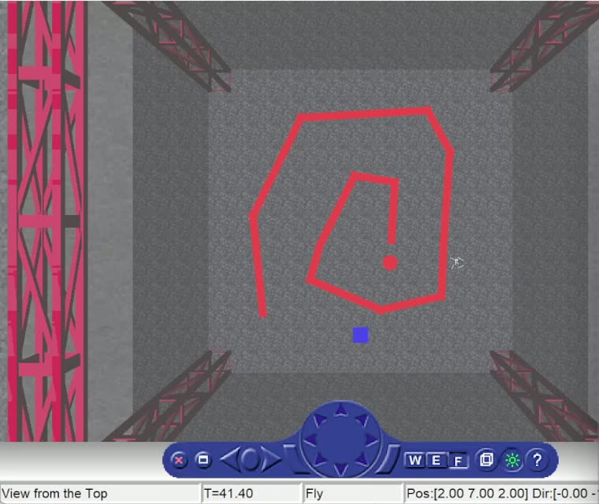
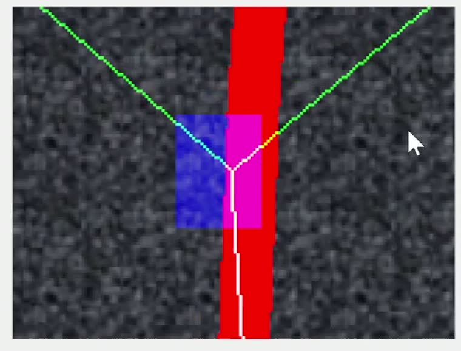
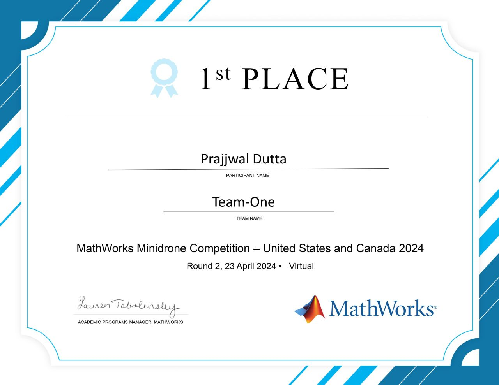

First Place with a Line-Following Parrot Mambo
Four of us entered the MathWorks Minidrone Competition for the United States and Canada as Team-One, and we took first place in Round 2. The task was a line-following one: a Parrot Mambo flies over a red track painted on the arena floor, follows it using nothing but its downward camera, and lands on a circle at the end. Everything ran in MATLAB and Simulink against the simulated arena.
Follow a red line you can only see from below.
The competition gives every team the same starting point: a Simulink model of the Parrot Mambo, a simulated arena with a red track on the floor, and a downward-facing camera. The drone has to take off, find the line, follow it wherever it goes, recognise the circle that marks the end, and land on it. No map, no external tracking, no operator. The only input that matters is a 120 by 160 pixel camera frame arriving every control step.
That constraint is what makes the problem interesting. At that resolution, and that close to the floor, the drone almost never sees the whole track. It sees a red band crossing a grey frame, and it has to work out from that alone which way the line continues and which way it came from.
Four stages, from red pixels to a landing.
This is the structure we walked through in our competition presentation. The image processing system turns the camera frame into a heading, and the control system turns that heading into a flight command.
| Stage | What it does |
|---|---|
| Red colour detection | Thresholds the camera frame into a bitmap of the track, separating red floor paint from grey floor |
| Waypoint calculation | Casts Bresenham rays across the bitmap to work out where the line leaves the frame, and picks the next waypoint |
| Circle detection | Watches for the filled circle that marks the end of the track |
| Control system | A path planning chart turns the waypoint into a position command for the Mambo |
Rays cast at the edges of the frame.
The part worth explaining is how the waypoint gets chosen, because it is not a curve fit or a Hough transform. It is a ray cast, done with Bresenham's line algorithm, and it is cheap enough to run every frame on a drone with no real compute on board.
W = edge_number(x, y) 1 up, 2 left, 3 down, 4 right which border of the 120 by 160 frame a point sits on
[X, Y] = nearest_edge(x, y) snap a point out to the closest border of the frame
Each ray starts near the centre of the image and walks outward pixel by pixel until it hits
red. The distance it travelled before hitting is the useful number. Rays that run a long way
before hitting are pointing along the line, and rays that stop almost immediately are
pointing across it. Comparing the rays gives the drone the direction the track continues in,
and edge_number then says which side of the frame the line is heading out of,
which is enough to place the next waypoint.


Round 2 was judged on a presentation.
Round 2 ran virtually, so the entry was a recorded walkthrough rather than a flight in a room somewhere. The four of us took a section each and explained the model end to end: how the red detection works, how the waypoint algorithm decides a heading, how the circle is recognised, and how the control system turns all of it into a command. Everything you see flying on this page is the Simulink simulation, which is what the competition was run against.

What we started from.
The competition project is built on the MathWorks Parrot Minidrone Competition template,
which supplies the airframe model, the arena, the sensor and command buses and the code
generation setup. Portions of that template are copyright 2015 Fabian Riether and Sertac
Karaman, and the rest is copyright 2017 The MathWorks, Inc. Our working project also
carries over the line-following approach and the Bresenham helper functions from the
open-source koraykzly/parrotMinidroneCompetition
project, which is where the ray-cast waypoint idea and the line_drawer,
nearest_edge and edge_number functions come from. I would rather
name that plainly than leave it ambiguous.
What I took away from it.
The lesson that stuck is how much you can get out of a deliberately cheap perception step. There is no filter, no map and no learned model anywhere in this pipeline. There is a colour threshold and a handful of rays walked across a small bitmap, and that is enough to fly a whole track and find the landing circle. On hardware with almost no compute, picking the representation that makes the question easy beats reaching for a heavier algorithm. It is the same trade I kept making later on the blimp, where quadrants beat 3D pose estimation for the same reason.